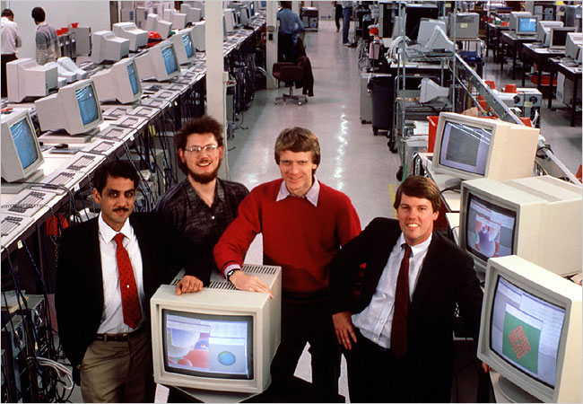

When you think of Silicon Valley, names like Steve Jobs, Bill Gates, and Mark Zuckerberg might come to mind. But there's one person who has also played a significant role in shaping the technology industry - Vinod Khosla
Born in Delhi, India, in 1955, Vinod Khosla is a name that echoes through the corridors of the technology industry. From the very beginning, he was destined to be an innovator and a creator. He grew up in a family of engineers, and his fascination with technology started at a very young age. However, it was not until he moved to the United States to attend Stanford University that he realized his true potential.
At Stanford, Khosla studied electrical engineering and honed his skills in computer hardware design. After graduating, he landed a job at Daisy Systems, where he worked on computer-aided design tools. However, it was his work at Sun Microsystems that would launch him into the stratosphere of the technology industry.
Khosla co-founded Sun Microsystems and advanced multimedia and the internet.
 In 1982, Khosla co-founded Sun Microsystems , a company that played a vital role in the development of multimedia technology. During his time at Sun Microsystems, Khosla helped develop and market the company's first workstation, which was designed for engineers and scientists. He also played a critical role in the creation of Network File System (NFS) , a technology that allows computers to share files across multiple computers and networks. NFS was a revolutionary breakthrough that significantly advanced the development of the internet.
Investing in eco-friendly tech and companies like Google and Square.
After leaving Sun Microsystems in 1986, Khosla turned his attention to venture capital. He co-founded Kleiner Perkins , a venture capital firm, and later established his own firm, Khosla Ventures, in 2004. Through his investments in companies like Google, Juniper Networks, and Square, Khosla continued to have an important impact on the technology industry.
“Vinod Khosla is the founder of Khosla Ventures, a venture capital firm with an eye for environmentally friendly technologies in addition to the standard array of Internet, computing, mobile and silicon technology companies. Khosla is an eager investor who knows what he’s looking for in a startup, and as seen from his previous talks at Disrupt, he isn’t afraid to speak his mind. (Burns, 2015)”
Through Khosla Ventures, Vinod Khosla has invested in a number of companies that are changing the world. One such company is KiOR, which uses biomass to produce a renewable crude oil substitute. Another is Calera, which has developed a process for capturing carbon dioxide emissions from power plants and turning them into building materials.
Khosla Ventures provides funding and resources to startups that are developing new technologies, products, and services that leverage the internet and multimedia to solve various problems and create value for consumers. Khosla's investments in startups that utilize the internet and multimedia technologies have had a significant impact on these industries as a whole.
Advocates for renewable energy and AI, investing in transformative solutions.
But Vinod Khosla's contributions to the technology industry do not end there. He has been a strong advocate for renewable energy and has invested in a number of companies that are working on clean energy solutions. He has also been a vocal supporter of artificial intelligence and machine learning, recognizing their potential to transform the world. In addition to his work in the technology industry, Khosla has also been a philanthropist. He and his wife established the Khosla Family Foundation, which supports a variety of causes, including education, healthcare, and the environment.
Vinod Khosla is a visionary, an innovator, and a leader. His contributions to the technology industry have changed the world and will continue to do so for generations to come . With his keen eye for promising startups and his unwavering commitment to innovation, Vinod Khosla is a force to be reckoned with in the technology industry.